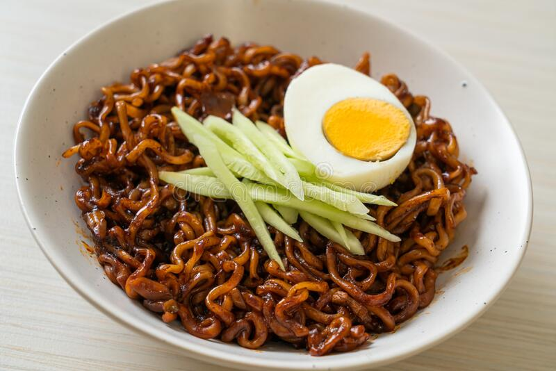

JAJANGMYEON

INGREDIENTS
- 1 pound of pork belly, cut into small cubes
- 1 onion, diced
- 1 zucchini, diced
- 1 potato, peeled and diced
- 1 sweet potato, peeled and diced
- 1/2 cup of black bean paste (jajangmyeon paste)
- 2 tablespoons of vegetable oil
- 1 tablespoon of sugar
- 1 tablespoon of oyster sauce
- 1 tablespoon of cornstarch
- 4-5 cups of water
- 4-5 servings of fresh or dried jajangmyeon noodles
- Cucumber and radish for garnish
INSTRUCTIONS
- In a large pot or wok, heat the vegetable oil over high heat. Add the pork belly, and stir-fry until
browned and cooked through.
- Add the diced onion, and stir-fry until translucent.
- Add the diced zucchini, potato, and sweet potato to the pot, and stir-fry for a few minutes.
- Add the black bean paste, sugar, and oyster sauce to the pot, and stir well.
- In a small bowl, mix the cornstarch with 1/2 cup of water, and add the mixture to the pot. Stir well to combine.
- Add the remaining water to the pot, and bring to a boil. Reduce the heat to medium-low, and let the
sauce simmer for about 20-30 minutes until the vegetables are cooked through and the sauce has thickened.
- Cook the jajangmyeon noodles according to package instructions. Drain well.
- To serve, place a serving of noodles in a bowl, and top with the jajang sauce. Garnish with sliced
cucumber and radish if desired.